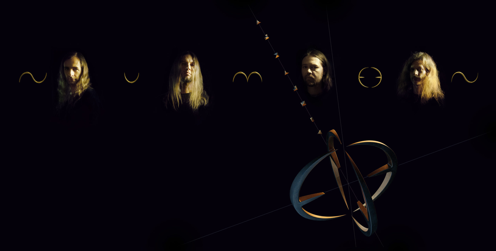
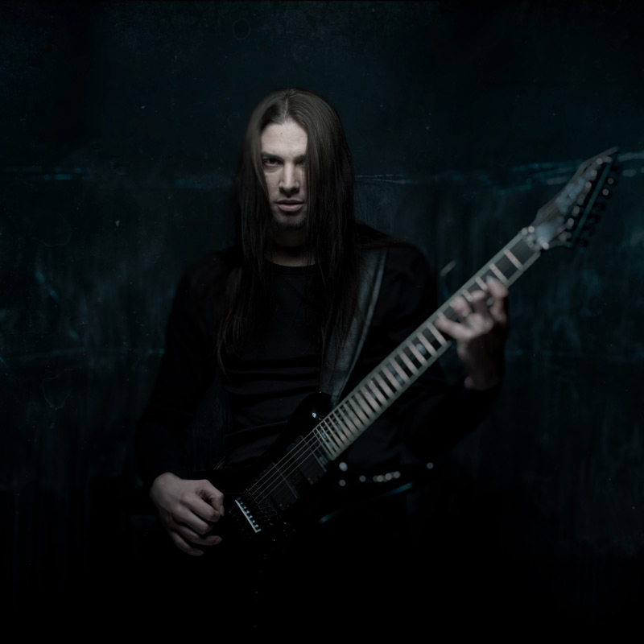
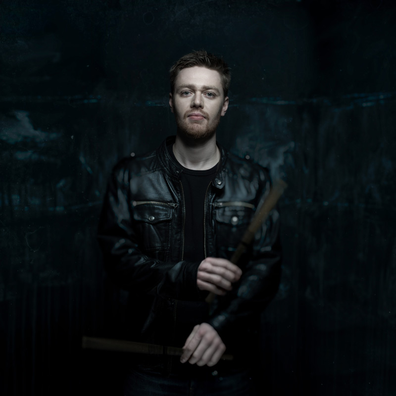
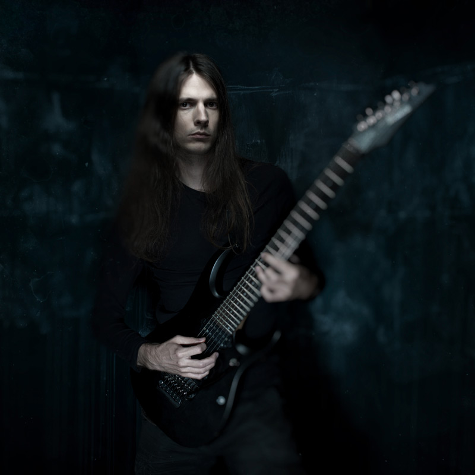
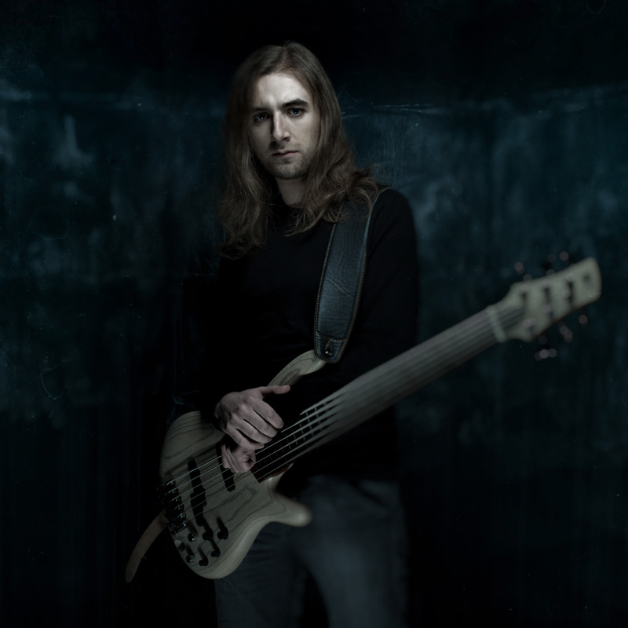

 Alkaloid is a collective of elite musicians who have each carved out a distinct legacy in the world of extreme and progressive metal. Together, they form a unit where technical mastery meets fearless experimentation, each member bringing a unique voice, vision, and deep experience to the band’s ever-evolving sound. Let’s take a closer look at each member, their musical history, and the unique elements they bring to Alkaloid.
 Morean (the artistic alias of Florian Magnus Maier) is a classically trained composer and the voice behind Alkaloid’s vast sci-fi and philosophical themes. Known for his work in Dark Fortress, he brings a wide vocal range and deep lyrical concepts to the band, blending extreme metal with a cinematic, narrative approach.
 Hannes Grossmann is a world-renowned drummer, composer, and producer whose precision and creativity drive Alkaloid’s rhythmic foundation. Known for his work in Necrophagist, Obscura, and Triptykon, he brings a fusion of technical mastery and expressive dynamics to the band. Beyond drumming, he contributes as a songwriter and producer, shaping Alkaloid’s progressive identity with both intricate compositions and cutting-edge production. His vision of music without genre boundaries fuels the group’s expansive sound, uniting ferocity with fluid, cinematic atmosphere.
 Christian Münzner is a German guitarist whose extraordinary technical ability and melodic sensibility have defined some of the most groundbreaking bands in extreme metal. Known for his work in Necrophagist, Obscura, and Spawn of Possession, he brings to Alkaloid a mastery of complex riffing and virtuosic solos that balance dazzling precision with emotional depth. His playing helped shape the band’s progressive identity, elevating their sound beyond the confines of technical death metal into something more expansive and expressive.
 Danny Tunker is a guitar virtuoso rooted in the extreme metal world, with deep respect among peers for his speed, precision, and adaptability. With a pedigree that includes bands like Aborted and God Dethroned, he’s well-versed in brutal and technical death metal.
Danny Tunker is a guitar virtuoso rooted in the extreme metal world, with deep respect among peers for his speed, precision, and adaptability. With a pedigree that includes bands like Aborted and God Dethroned, he’s well-versed in brutal and technical death metal.
 Linus Klausenitzer is a classically trained bassist and founding member of Alkaloid, renowned for his mastery of six- and seven-string fretless bass. With a background in bands like Obscura and Obsidious, he brings fluid, melodic textures and technical depth to Alkaloid’s sound. His expressive playing expands the band’s progressive death metal foundation with jazz-inspired phrasing and a distinctive low-end voice that balances precision with atmosphere.